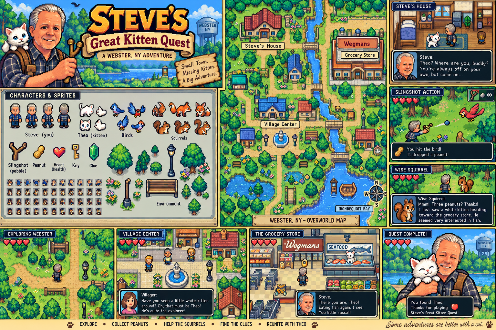

STEVE'S GREAT KITTEN QUEST
A WEBSTER, NEW YORK ADVENTURE

THEO HAS DISAPPEARED!
Explore Webster, collect peanuts, and ask four squirrels where the independent white kitten went.
♥ ♥ ♥ ♥ ♥PEANUTS: 0CLUES: 0/4
STEVE: Theo? Theo! Where'd that little rascal go?